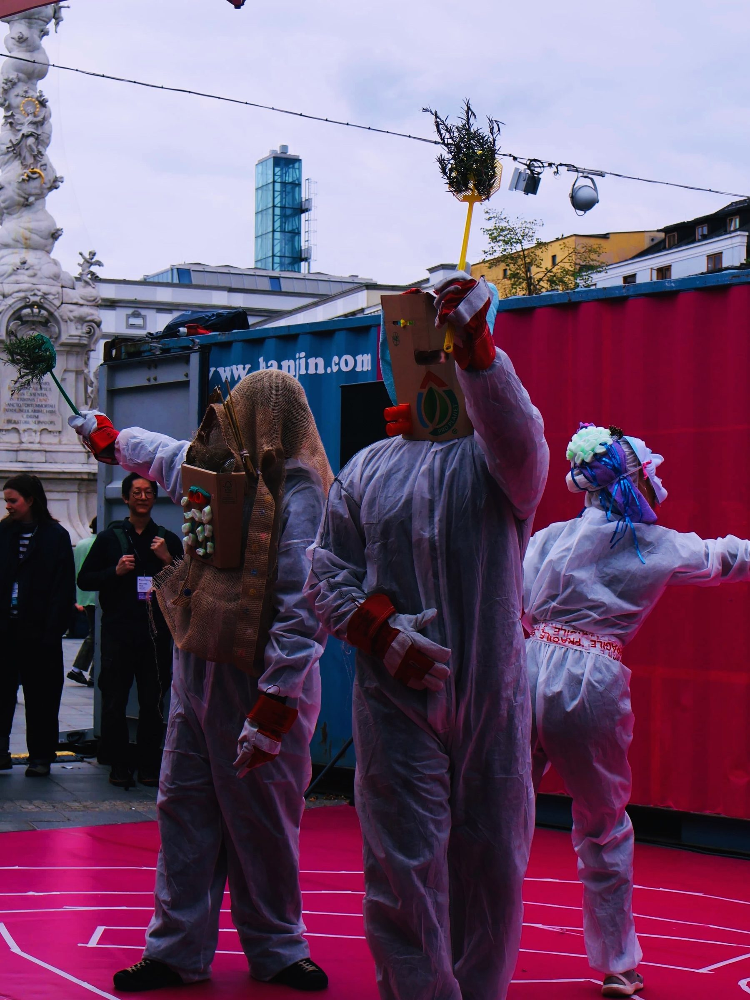
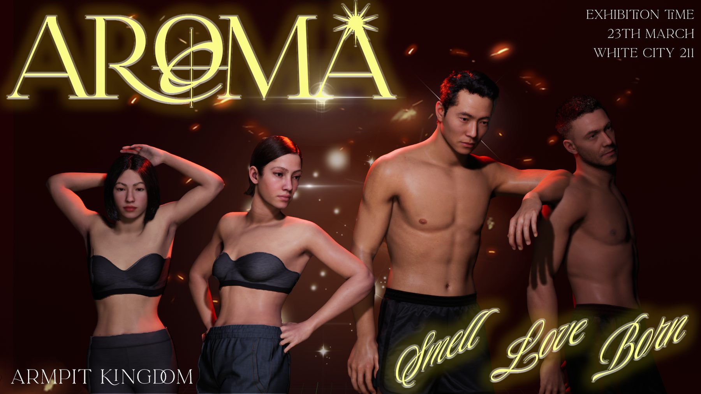
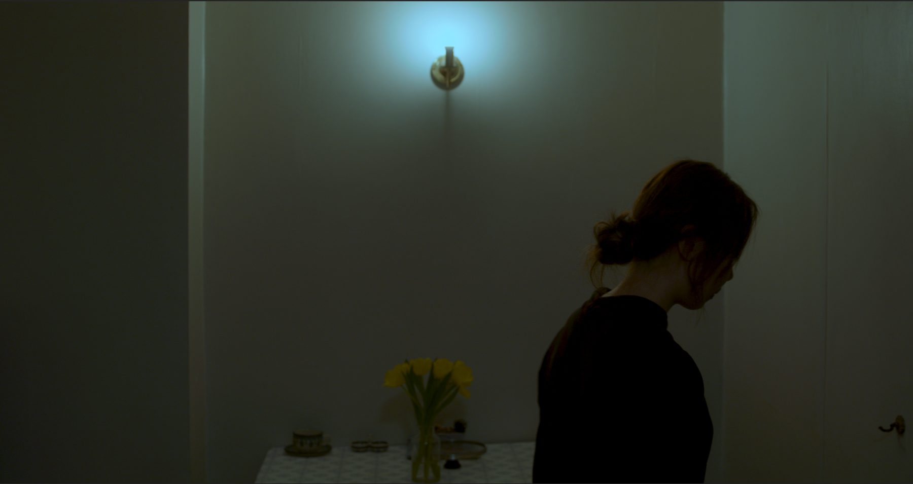
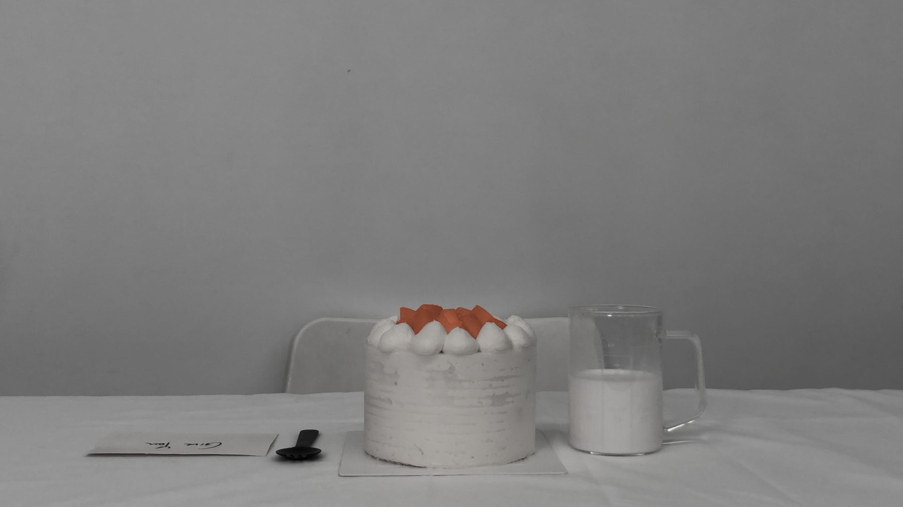

Works

Ritual Robotics: The Fungal Act 01
2026
A performance of foraging and cultivation, in which sensor gloves turn the movement of two bodies into sound.

Ritual Robotics: Act 01
2026
A participatory ritual on a labyrinth, where folk tradition meets digital puppetry and robotics.

Journey to the Reishi
2023
A multisensory VR journey that carries the spirit of a Reishi mushroom back to the forest it came from.

Armpit Kingdom
2023
An imagined society in which human pheromones reshape how people communicate, date and desire.

Ann
2022
A mother seeks forgiveness from her deceased daughter by sharing a meal across the real and digital worlds.

Delicious Me
2021
Edible sex toys that tie the human desire for meat to the desire for sex.

Schrödinger’s Cake
2020
An experimental short film with several endings, about a cake its protagonist is destined not to eat.